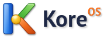
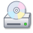

A desktop with character
A two-column Start menu, quick launch, desktop icons, and windows that feel right at home.

Get KoreOSThe desktop you remember.
The freedom of Linux. Welcome to KoreOS.
An original desktop, thoughtfully built from the Start menu up.
Custom icons, familiar details, and a personality all its own.
Blue title bars. A proper Start menu. Apps that do their thing.
A desktop that puts the fun back in computing.
A two-column Start menu, quick launch, desktop icons, and windows that feel right at home.
Browse, write, paint, calculate, and play. KoreOS brings its own collection of familiar apps.
Choose Blue, Olive, or Silver. Change your wallpaper and settle into a desktop that feels like yours.
Your files, folders, and favorite places, with a classic task pane and a familiar way to get around.
Pick your platform. Download an ISO. Make yourself at home.
Checking the latest GitHub release…
For Apple Silicon virtual machines in UTM or VMware Fusion.
Download ARM ISO
AMD64For AMD 64-bit PCs and compatible x86-64 virtual machines.
Download AMD ISOFor Intel 64-bit PCs and compatible x86-64 virtual machines.
Download Intel ISO4 GB RAM recommended · 10 GB storage minimum, 32 GB recommended. This is an early release; a virtual machine is a good place to begin. ARM64 is built for UEFI virtual machines, and is not a universal installer for ARM laptops or Chromebooks.
“AMD64” is the name of the x86-64 architecture, so the Intel and AMD downloads use the same ISO.
KoreOS brings a love for classic desktops to a Debian-based Linux system, with original branding, themes, icons, sounds, and a custom desktop shell.
Explore the project on GitHub ↗